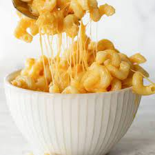

Creamy Mac & Cheese
Ingredients
1. Milk
2.Butter
3.Noodles
4.Cheese
- Bring a large pot of salted water to the boil, add the pasta then follow package directions, but cook 1 minute less than the package calls for. Drain.
- Meanwhile, make the creamy cheese sauce. Melt the butter in a large high-sided pot or Dutch oven over medium heat. Sprinkle the flour over the melted butter and whisk the butter and flour together and around the pan until they smell toasted and look light brown; 2 to 3 minutes.
- While whisking, pour in the warm milk. Continue to cook, constantly whisking until the sauce begins to simmer and thickens. (The sauce only thickens after it has reached a simmer.)
- Turn the heat to low then stir in the cheddar and cream cheeses, salt, and black pepper. When the sauce is smooth and velvety, stir in the cooked pasta. If the sauce looks wet/thin, don’t worry, the pasta absorbs some the extra moisture as it cools. Turn the heat off, and then cover with a lid. Leave for 5 minutes, stir once more, and then serve.
